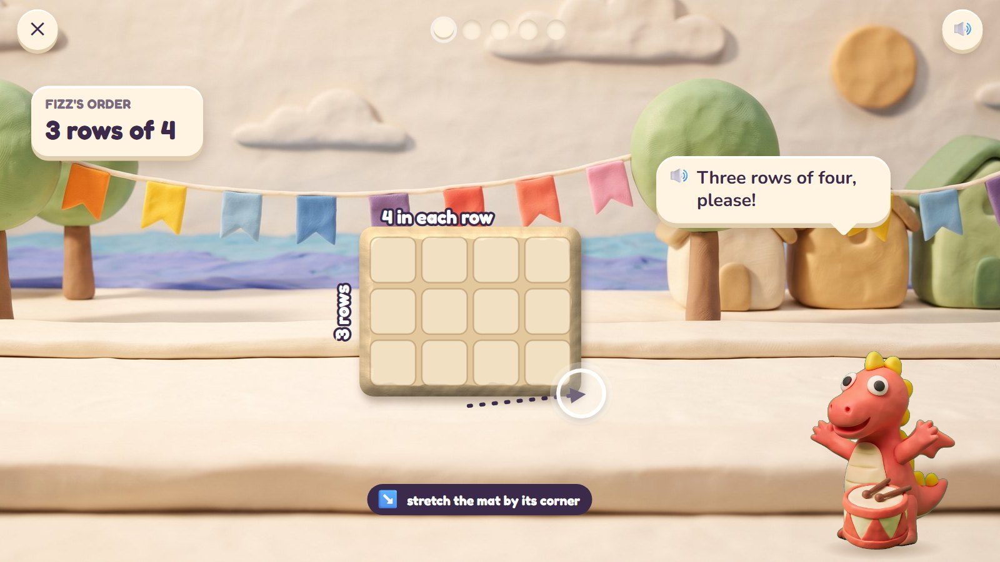
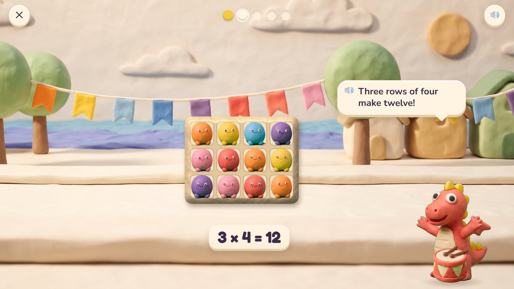
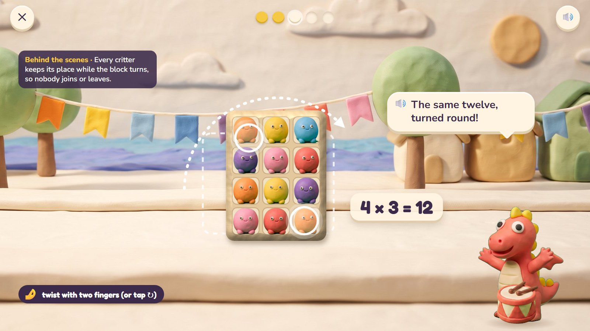
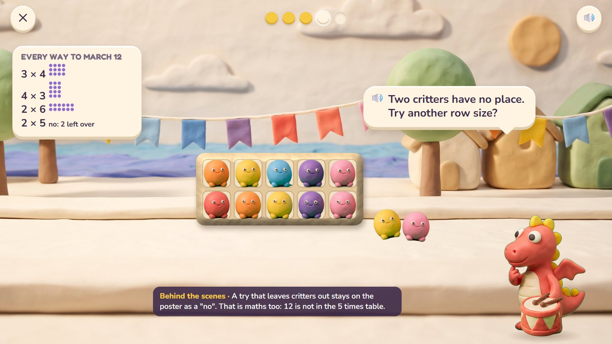
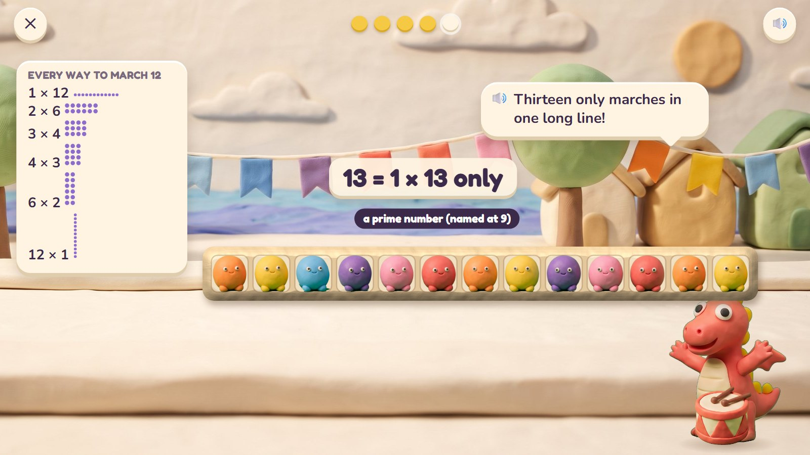
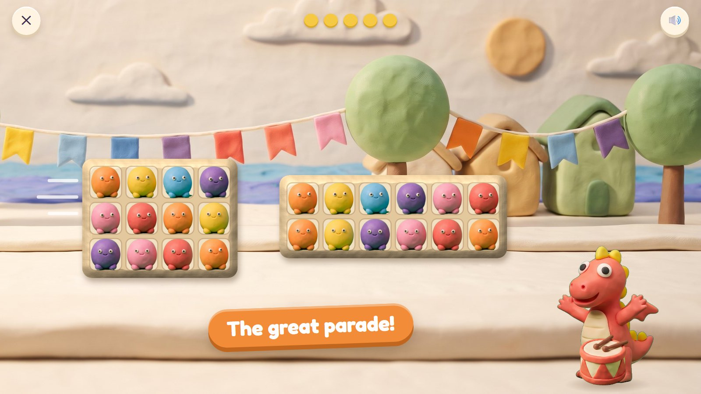

Fizz leads the bay's parade, and the critters march in neat blocks with no gaps. The child stretches the parade mat by its corner to set the rows and columns, and the critters march into the squares. Twisting the block shows that 3 rows of 4 and 4 rows of 3 are the same twelve. Then the big job: find every way twelve critters can march.
Grades 2–4 · ages 7–9 host: Fizz move: stretch a corner, twist, swipe to split
The maths: Arrays and multiplication (rows × columns); turning swaps the numbers (3 × 4 = 4 × 3); every way to make a number (factors); splitting a block. One activity is five rounds, about two minutes. With one finger: + and − buttons for rows and columns; the ↻ button.
Critters marching in step to a drum; leftovers shrugging at the side; the parade growing with every block found.
Fixed on the parade ground; the finale slides along the promenade.
The parade marches along the promenade in every block the child found (the view slides sideways, 4 seconds).

Fizz's order: 3 rows of 4. The child drags the parade mat's corner out to three rows of four squares.
🔊 Three rows of four, please!
The rows and columns are named as the mat grows: "3 rows", "4 in each row".

Twelve critters march into the twelve squares to the beat of Fizz's drum.
🔊 Three rows of four make twelve!
The multiplication is written after the action: 3 × 4 = 12.

The child twists the block with two fingers: now 4 rows of 3. Nobody joined and nobody left.
🔊 The same twelve, turned round!
Every critter keeps its place while the block turns, so 3 × 4 = 4 × 3 is seen, not told.

Every way to march 12: the poster has 3 × 4, 4 × 3 and 2 × 6. The child tries rows of 5: two critters are left over.
🔊 Two critters have no place. Try another row size?
The try stays on the poster as "no: 2 left over". That is useful maths too: 12 is not in the 5 times table.

The poster now has all six ways for 12. Then 13 critters: only one long line works.
🔊 Thirteen only marches in one long line!
From age 9 such numbers get their name: prime.

Every block the child found marches along the promenade, Fizz drumming in front.
🔊 The great parade!
Mock-ups: Gemini's clay pictures (scenes, friends, props) with the maths drawn by code in the same clay look, the way the app would draw it, so every count and size is exact.
One activity card. The same activity serves other ages with other numbers:
| Age | What changes |
|---|---|
| 7 | Up to 5 × 5; adding rows (4 + 4 + 4). |
| 8 | Tables to 10 × 10; turning; every way to make 12, 18, 24. |
| 9 | Factors to 48; primes; splitting a block; area in squares. |
| Mistake | Looks like | What happens (never red, never "wrong") |
|---|---|---|
| Rows and columns swapped | 4 rows of 3 for "3 rows of 4" | the twist shows the same twelve; Fizz names both |
| Counting one by one | right but slow | accepted; later the tip "count by rows: 4, 8, 12" |
| Ignoring leftovers | 5 in a row for 12 | the leftovers stand aside; the poster records "no" |
| Gaps in the block | a 3 × 5 mat for 12 | three squares stay empty: "Every square needs a critter." |
Test robot: Reads rows and columns (or the number), drags the corner to the exact block and finds every factor pair in the "every way" round. Once it tries 5 in a row for 12.
← Back to Clay Bay · Poke Pals · Pull-a-Shape · Critter Maker · Seesaw Twins · Parade Squares · Fair Slices · Zoom Dig